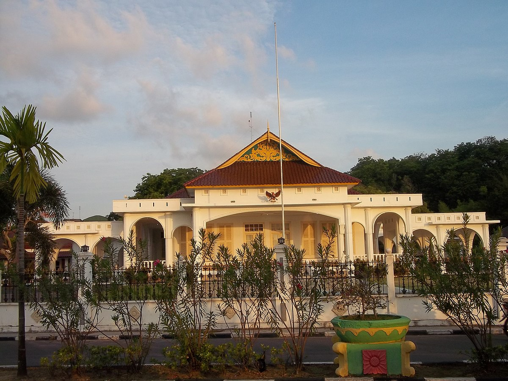

Sejarah
Pada masa Hindia Belanda, Tanjungpinang merupakan pusat pemerintahan Karesidenan Riouw. Kemudian di awal kemerdekaan Indonesia, menjadi ibu kota Provinsi Riau. Pada tahun 1957, Tanjungpinang menjadi ibu kota Provinsi Riau.
Tanjung Pinang adalah ibu kota dari provinsi Kepulauan Riau, Indonesia. Kota ini terletak di Pulau Bintan dan beberapa pulau kecil seperti Pulau Dompak dan Pulau Penyengat
Pada masa Hindia Belanda, Tanjungpinang merupakan pusat pemerintahan Karesidenan Riouw. Kemudian di awal kemerdekaan Indonesia, menjadi ibu kota Provinsi Riau. Pada tahun 1957, Tanjungpinang menjadi ibu kota Provinsi Riau.
Sebagian wilayah Tanjungpinang merupakan dataran rendah, kawasan rawa bakau, dan sebagian lain merupakan perbukitan, sehingga lahan kota sangat bervariasi dan berkontur
Kota ini memiliki beberapa tempat pariwisata, seperti Pulau Penyengat yang hanya berjarak kurang lebih 2 mil dari Pelabuhan Sri Bintan Pura, Pantai Trikora dengan pasir putih, terletak kurang lebih 65 km dari kota, dan pantai buatan yaitu Tepi Laut di garis pantai pusat kota.
Pulau Penyengat (atau Pulau Penyengat Inderasakti dalam sebutan sumber-sumber sejarah) adalah sebuah pulau kecil di Kota Tanjungpinang, Kepulauan Riau, yang berjarak kurang lebih 2 km dari pusat kota.
Pantai Trikora adalah salah satu pantai dengan pasir putih yang terletak di pulau Bintan, Kepulauan Riau, Indonesia. Pantai alami ini memiliki ombak yang landai dengan bebatuan-bebatuan indah di pantai.